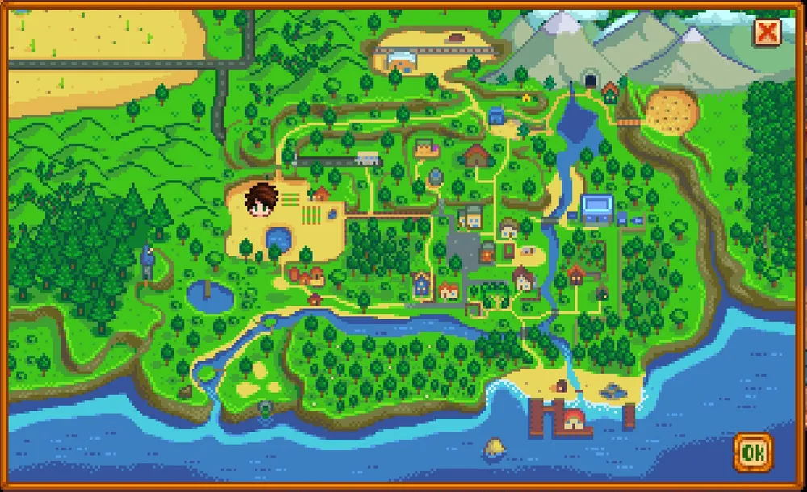
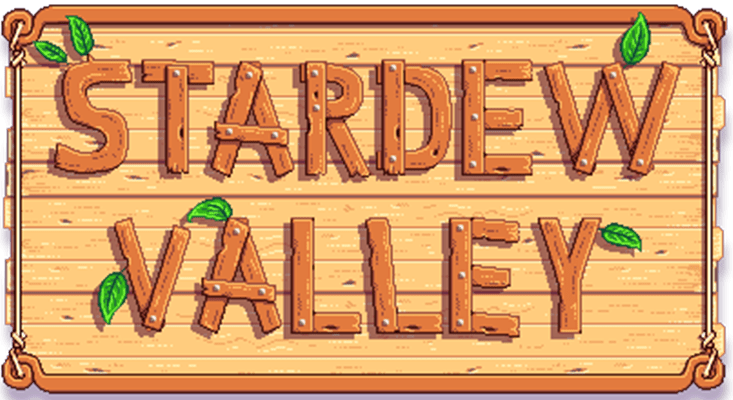

농장
메인

평범한 농장
농지 면적이 가장 넓다.
 '
'
강변 농장
강이 농장의
절반을 차지한다.

삼림 농장
숲에서 구할 수 있는
채집물이 생성된다.

언덕 농장
광물이 생성된다.

네 구석 농장
4인 멀티용 농장이다.

야생 농장
밤에 몬스터가 출몰한다.

해변 농장
모래 위에는 스프링클러를
설치할 수 없다.

목초지 농장
닭장과 닭 두 마리가
제공되며 초반 퀘스트가
조금 변경된다.

